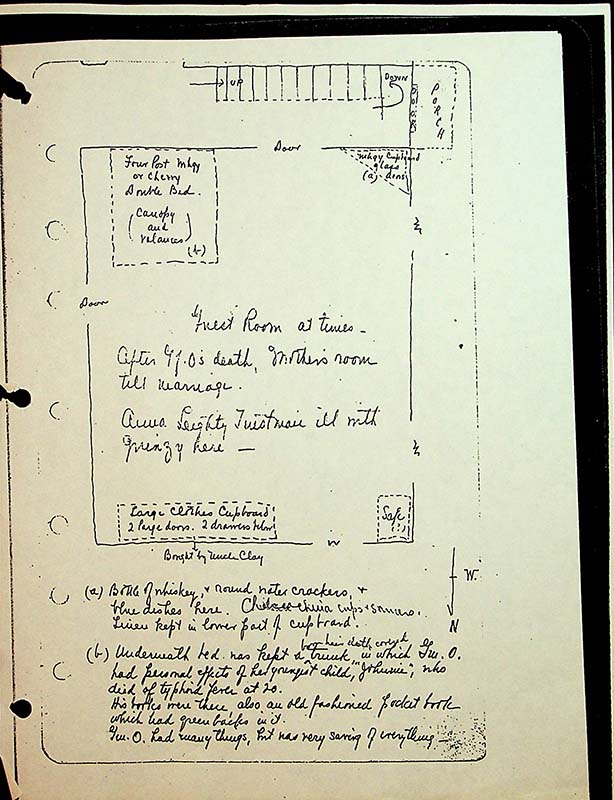

top center of page, stairs up to right
porchtop right of page
doortop center
Four Post Mhgy [mahogany] or Cherry Double Bed (Canopy and Valances)left of door
Mgny Cupboard glass doors right side of door, in corner
Guest room at times- After Gf.O’s death, mother’s room till marriage. Anna Leighty Tintsman ill with quinzy here.written in center
Large Clothes Cupboard, 2 large doors. 2 doors below. Bought by Uncle Claybottom left of room
(a) Bottle of whiskey, & round water crackers, & blue dishes here. Chelsea china cups & saucers. Linens kept in lower part of cupboard!bottom of page
(b) Underneath bed was kept a trunk in which Gm.O. had personal effects of her youngest child {carrot, line above reads:} brown hair cloth covered “Johnnie” who died of typhoid fever at 20. His books were there, also an old fashioned pocketbook which had greenbacks in it.
Gm.O. had many things, but was very saving of everything.